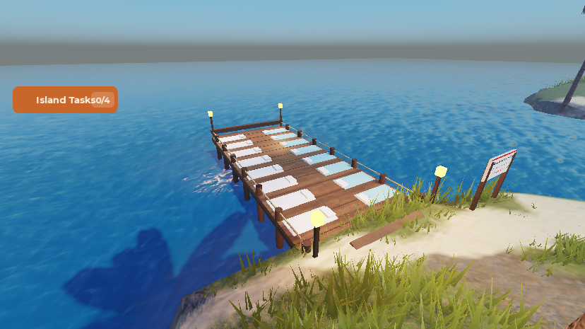
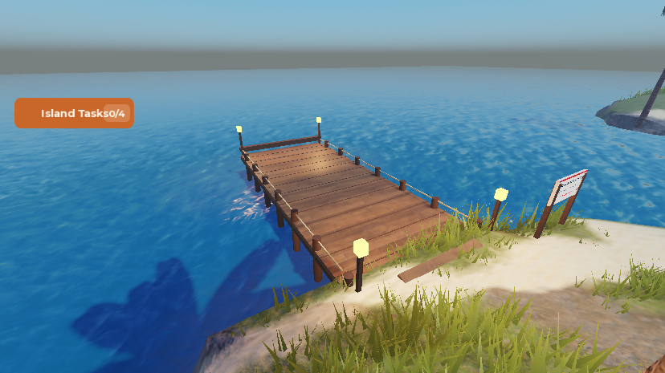
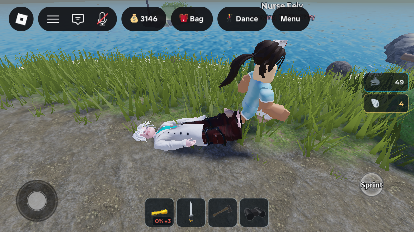
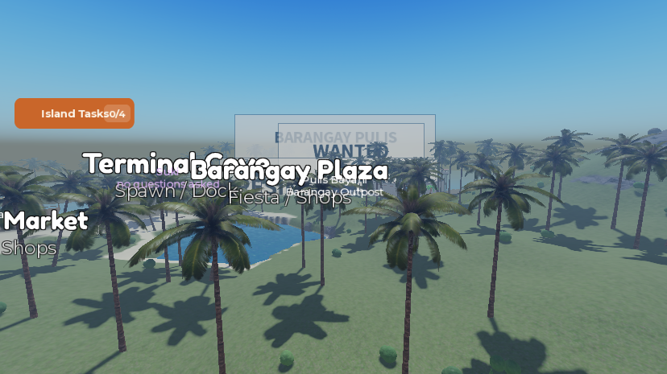
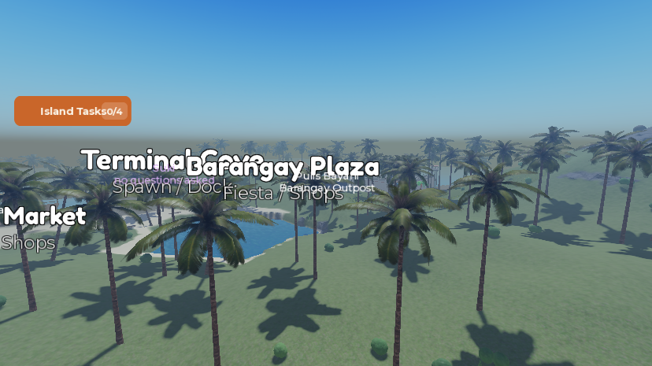
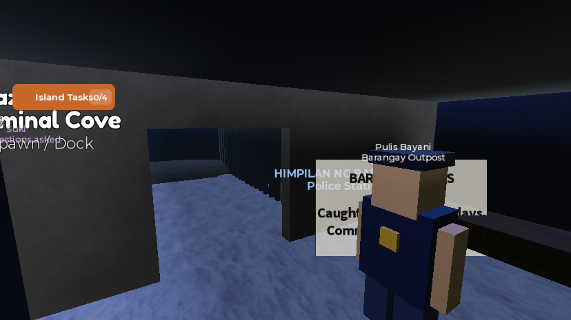
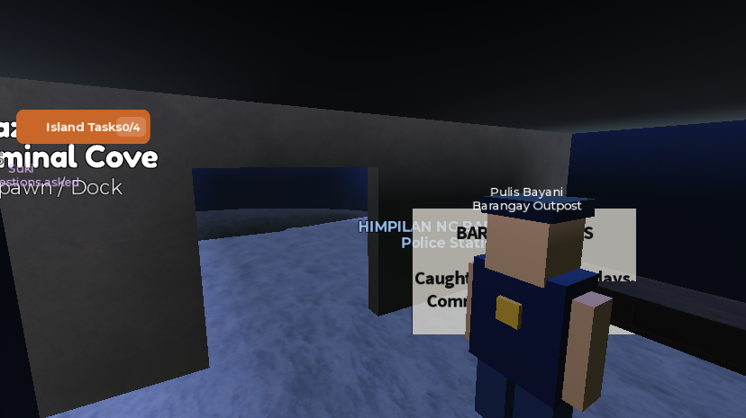
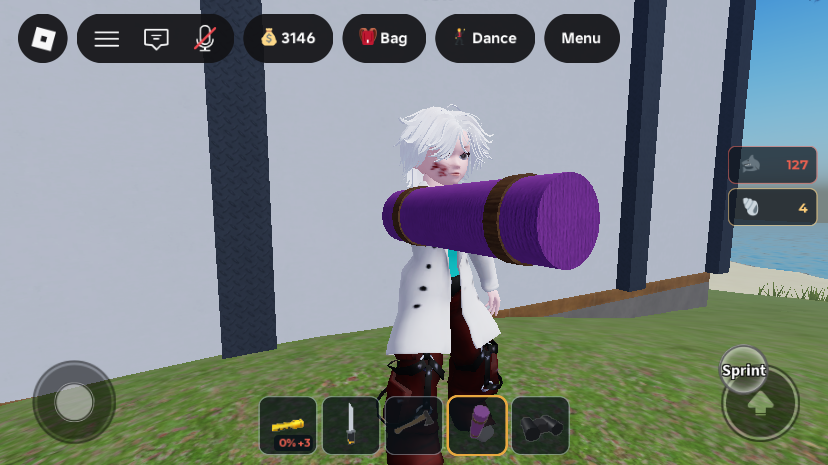
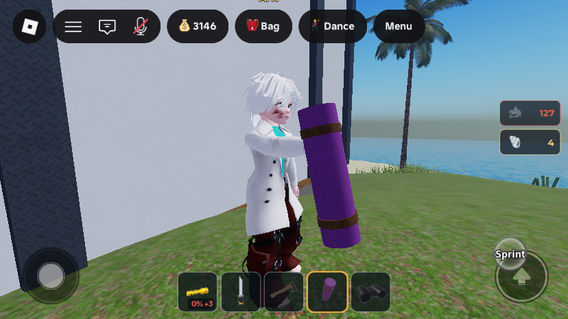

Phase A: dock beds out, ankle drag, old police cage and signs, tolda grip
What was asked
The user pasted an 18-item list. Item 12 (a suggestion wall) was cancelled. The other 17 are planned as seven phases, each built, tested and written up on its own page. This page is Phase A, the quick low-risk fixes:
- Item 1 — "remove bed on hospital flow, avoid any sexual content flag".
- Item 3 — "should drag on patient feet to make it look funny".
- Item 15 — "remove the first police structure, it have some UI bug showing all the way in the map". The user confirmed this means the old holding cage inside
PoliceStationand the station signs that are visible from anywhere. - Item 6 — "equip/holding tolda look like not aligned on hand".
1. Hospital flow: dock beds removed, patients dragged by the ankles (items 1 + 3)
A search found no part named Bed or Cot. But the Pantalan dock had 16 mats, each with a pillow, in two rows, and a drowned diver was laid on one on their back until a nurse came. These read as beds. The old carry also welded the patient's root part directly behind the nurse's torso: 3 studs back, tilted −55°, with collisions off, so the two bodies overlapped at torso height. Both were changed.


- retired the
Matsfolder (16Mat+ 16Pillowparts) moved toServerStorage._Retired.Workspace_MedicalDock_Pantalan__Mats. No script references them (full source scan). The invisibleSlots/Slot_1..16anchors and theirCarryPrompts are unchanged. - Lying pose (
layOnMat): still face up on the slot, but turned 180° so the feet point at the aisle where the nurse stands (it used to be the head).pickupPointis unchanged; its comment now says "at their feet". - Ankle drag (
attachCarry): the fixedDRAG_OFFSETis gone. The patient's feet are measured in their own root space (feetInRootSpace: the midpoint ofLeftFoot/RightFoot; R6 falls back to the bottom of each leg). The body is then placed so the feet land atANKLE_GRIP = (1.6, -1.0, 0.9)in the carrier's root space, just behind and beside the right hand. The body is tipped byDRAG_TILT = 104°: face up, head trailing a body-length behind and just above the ground.
Fitting per avatar was needed: with a fixed offset, a tall avatar's legs (HipHeight 3.21) reached 0.45 studs in front of the nurse, through her legs. The weld, theNurseCarrycollision group,Masslessand the network owner are unchanged. The same function serves bot and player nurses. - Header and inline comments now say "flat out on the planks" and "grabs them by the ankles".

2. Old police structure: holding cage retired, signs no longer map-wide (item 15)
Workspace.IslaMarahuyo.PoliceStation still contained the first holding cell. It has been unused since the Piitan ng Marahuyo compound took over jailing. Three of the station's BillboardGuis had MaxDistance = inf, so the "BARANGAY PULIS" entrance sign, the rules plaque and the WANTED poster showed full-size from anywhere on the island, even through walls.




Partition_KH_*) belong to the building and stay.- retired 27 parts moved to
ServerStorage._Retired.Workspace_PoliceStation__KulunganCage:CellWall,CellBench,HoldingSpot,Kulungan_CellWall2,Kulungan_CellBench2,Kulungan_Bar2_1..11, and 11 parts simply namedBar(the first cell's bars, in a row at z −100.8 between the two cell walls). No script references any of them (full source scan). - edited
MaxDistancefrominfto140(the same as the station'sFloor.Sign) onHarapan_EntranceSign.BillboardGui,Harapan_RulesPlaque.BillboardGuiandArmas_WantedPoster.BillboardGui.
3. Tolda held upright in the fist (item 6)
The tolda tool has no custom weld: the hand position comes only from Tool.Grip. Measured in a playtest, the old grip laid the 3.2-stud roll along the forearm, centred on the hand, so half of it pushed back into the chest. The new grip stands it upright in the fist, gripped just above centre, with the top leaning 12° back toward the shoulder. It no longer clips the body and stays below the face from the front.


- edited
ServerStorage.ItemAssets.ToldaTool.Grip: from rotation-only (90° about Y, position 0) toCFrame.new(-0.7, 0, 0) * CFrame.Angles(0, 0, rad 90) * CFrame.Angles(rad -12, 0, 0). This is the only tolda tool in the place, andInventoryServiceclones it fresh on each grant.
All changes
| Path | What | |
|---|---|---|
| edited | ServerScriptService.ReviveService | DRAG_OFFSET replaced by ANKLE_GRIP + DRAG_TILT; new feetInRootSpace; attachCarry fits the body to the grip; layOnMat turns the patient feet-to-aisle; comments |
| retired | Workspace.IslaMarahuyo.Activities.MedicalDock.Pantalan.Mats | now ServerStorage._Retired.Workspace_MedicalDock_Pantalan__Mats |
| retired | 27 cage parts in Workspace.IslaMarahuyo.PoliceStation | now in ServerStorage._Retired.Workspace_PoliceStation__KulunganCage |
| edited | PoliceStation.{Harapan_EntranceSign, Harapan_RulesPlaque, Armas_WantedPoster}.BillboardGui | MaxDistance inf → 140 |
| edited | ServerStorage.ItemAssets.ToldaTool | Grip |
| new | ServerStorage._Retired (Folder) | holds world pieces taken out of the map, named Service_Parent__Name like _RetiredUI. To restore one: rename it and parent it back. |
| edited | D:\GitHubRepo\IslaMarahuyo\updates\_tools\Capture-Studio.ps1 | restores a minimized Studio without focus and re-minimizes it afterwards; fixed the crop (see Tooling notes) |
No new remotes or attributes. Lighting ClockTime was set to 13 for the edit-mode screenshots and restored to 0 afterwards.
How it was tested
- Studio playtest, R15 test avatar:
ReviveService.Beginlaid the avatar face up on Slot 1 with its head toward the outer edge (root up vector −X) and its feet toward the aisle. Nurse Fely came in about 16 s and dragged it. The measured feet midpoint in her root space was exactly(1.6, −1.0, 0.9), clear of her legs, and the head rode on the ground. The revive completed (onCompletefired). - Tolda: equipped in a playtest. The roll's axis was measured in root space for several grips, and the chosen one was checked from the front and the side (screenshots above).
- Station signs: compared from 326 studs before and after (screenshots above).
- All 280 scripts'
Sourcewere scanned for the names of the retired parts: no hits.
Not verified / known gaps
- A player nurse dragging a patient has not been seen (it needs 2 clients). It uses the same
attachCarry. The ankle grip is tuned to a bot nurse's right hand, and a standard R15 hand sits a little further in. Worth a look with two players. - The nurse's arm is not animated: her right hand swings normally while the feet stay at the grip point, about a stud behind it. An arm-back pose would sell it better.
- More infinite-distance labels exist that are not part of the police station and were left alone: the 7 zone labels (
Zones.*.Label) and the 4 job-NPC nametags (RoleBots.PulisBoy/MangTasyo/AlingNena/SukiTheFixer.Torso.NameTag). They show from everywhere, including indoors. The "Pulis Bayani — Barangay Outpost" tag is one of them. If the user still sees a map-wide police label, that tag is the next candidate. - The rules plaque still quotes sentences in days. It will be rewritten in Phase E (10/15/20-minute sentences).
- Unchanged from before: the EKG and pulse sound IDs fail to load ("Asset type does not match"), and the quick-test
ItemConfig.Bodega.AxeDamage = 20(real value 1) is still in place.
Remaining phases
- B — self-revive with a sabotage penalty and a cheaper fee for player carriers (2); axe swing with momentum (4); knife removed, shark-defence consumable with a HUD count (5).
- C — Palengke tile view on mobile (8).
- D — tolda break-in (about 10 axe hits, only while the owner is away, no police) (9); the tolda asset is future work (10).
- E — 10/15/20-minute sentences (13); barred prison walls (11); saved stars and an overhead "came from prison" tag (17).
- F — ronda patrol with warnings, capture and raids (7); sneaky, creepy patrols (14); en-route spotting and a 5-attempt search (16); more officers running at high stars (17).
- G — Tanaw Ridge watchtower with a spotlight and tip-offs (18).
Tooling notes for the next session
Capture-Studio.ps1: the crop path had never worked. PowerShell names are case-insensitive, so the window handle$hoverwrote the-Hcrop height and the crop bitmap came out 263,774 px tall (a GDI+ "generic error" on save). The handle is now$hwnd. The script also restores a minimized Studio withSW_SHOWNOACTIVATE, waits 1.5 s and re-minimizes it. The crop-X 550 -Y 358 -W 828 -H 465was checked against a full capture and is correct for the iPhone 6 Plus emulation in a 1938×1048 window.- The MCP
screen_capturetool returns a blank image while Studio is minimized. Use the script. - In a playtest the MCP resets the camera to Custom after each
execute_luau. To hold a shot, bind aRenderStepatEnum.RenderPriority.Last.Value + 1on the Client that sets a Scriptable camera every frame. script_grepis not exhaustive. It missedDebugDrowninBreathService. Before removing anything, scanSourceof everyLuaSourceContainerwithexecute_luau.- Patients were started with
require(ReviveService).Begin(player)from the Server datamodel, and the live bots served them. The previous page recommendsServerStorage.DebugDrown:Fire(player)instead (it also sets BreathService's drowning lock). Prefer the hook.